护肝攻略
国际服单人世界采集火油方法
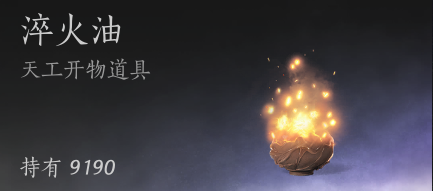
（早期的天工火，附着在武器上增加气血伤害）
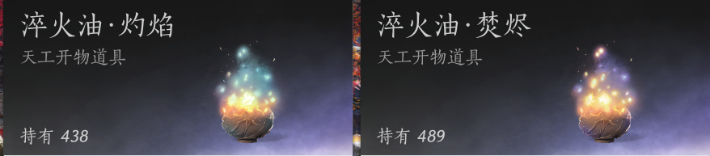
（不见山之后解锁的高级天工火，需要2火油+1毒或者2火油+1水制造）
缺天工火？缺火油造高级的特殊淬火油？那么来看看这个攻略，希望能帮助到你。
⌕ 所有图片均可双击放大；也可聚焦图片后按 Enter 查看原图。
采集佛泪参
可以在单人世界或者多人世界采集佛泪参，佛泪参有几处密集生长点，可以每天去看看。而且佛泪参有几率掉落佛泪须，是很多奇术的升级材料。但是多人世界比较难抢到。
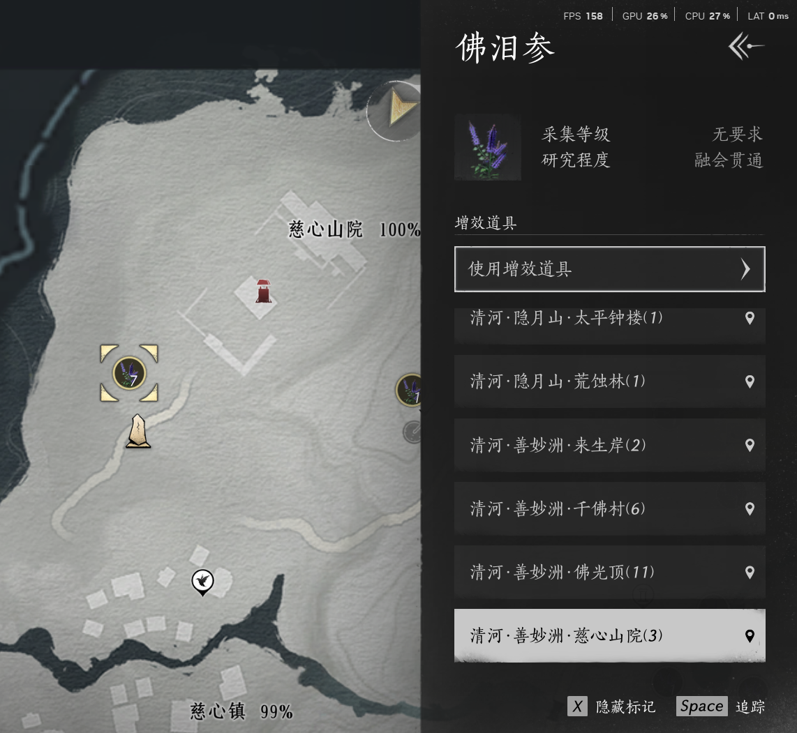
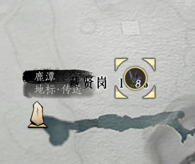
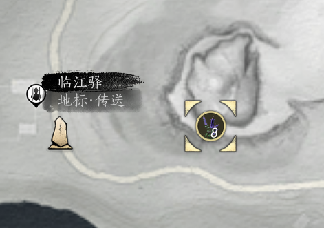
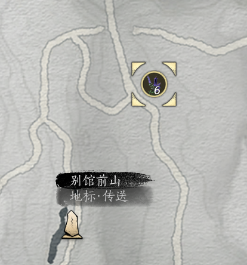
单人世界手动采集火盆
下图所示的火盆可以采集到1~3个淬火油。
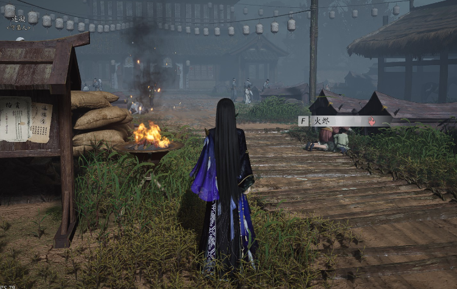
以下这些地点（按照由多到少排序）可以比较密集采集到火油：
开封天上来。整个天上来都是火盆，可以从赤龙堂界碑开始绕圈走，用“听风辨位”搜索还没采集的火盆。
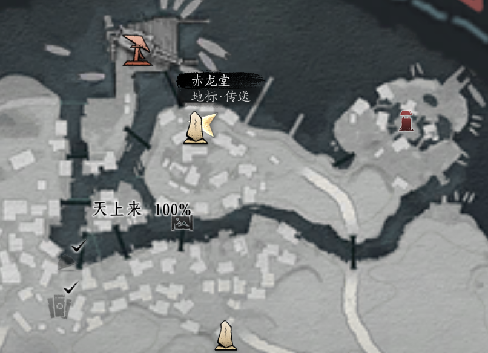
开封白马驿界碑附近，大家都在用火盆烧纸钱。
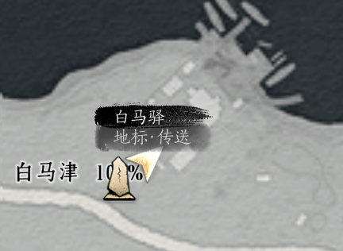
清河丰和村村尾（箭头所在）
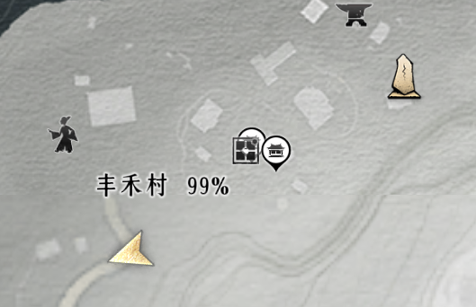
清河别馆前山传送点，沿着箭头方向一路上山都有火盆，还有绣金楼黑衣人陪你玩耍。
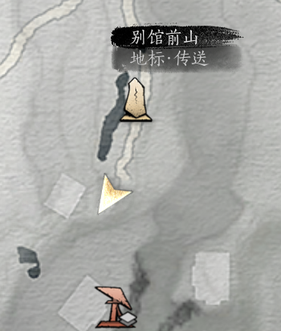
清河佛爷寨，从传送点到据点之前有6个火盆，可以一路shift安心采。
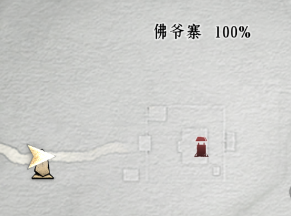
单人世界建造采火大道
如果你有购买采集马，有采集足够的木材的话，可以参考以下方法建造“采火大道”。造好之后就可以骑着采集马快速采集啦。
图纸码分享
| 分享码 | 图片 | 作者 | 耗材 |
|---|---|---|---|
SHARE282eb5dc7c6c5ad0 | 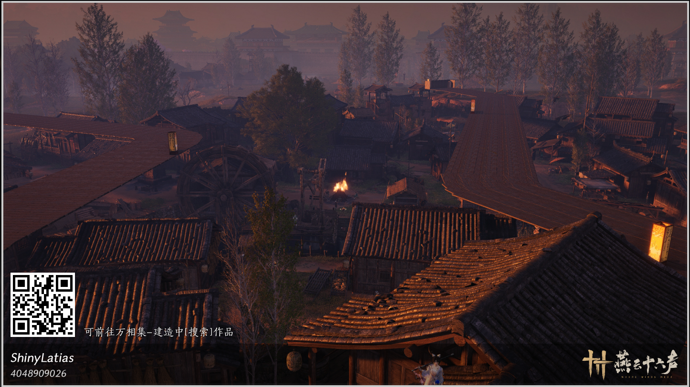 | ShinyLatias | 约982原木 |
SHARE13b547403c84966d | 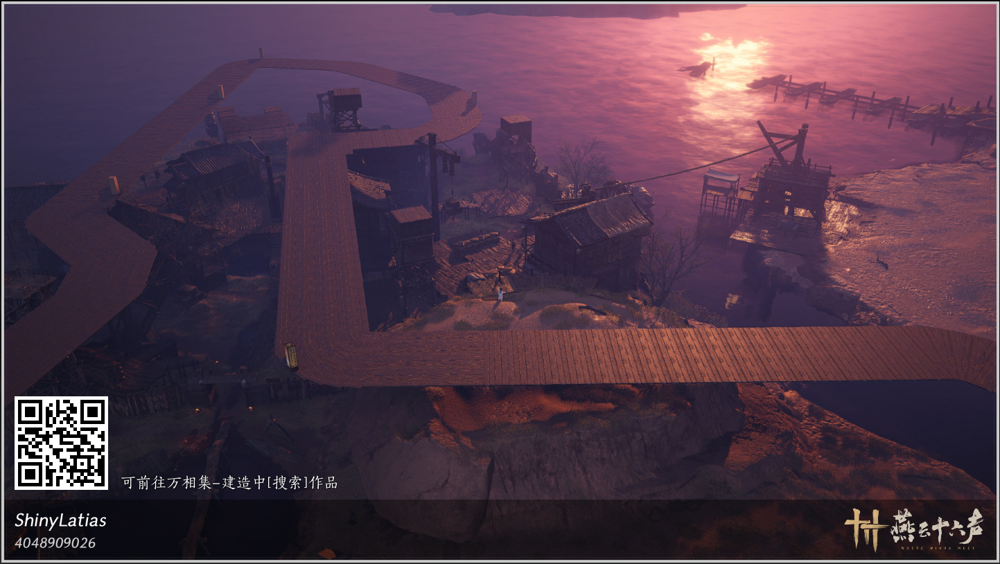 | ShinyLatias | 约1000原木 |
SHAREd12b08b957e24afc | 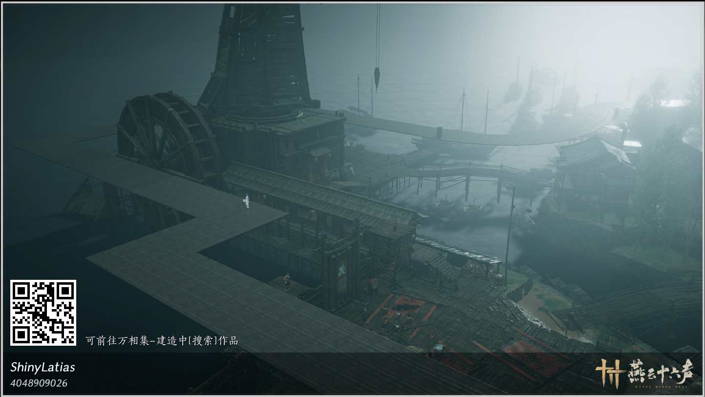 | ShinyLatias | 约491原木 |
SHARE44e08c8829845723 | 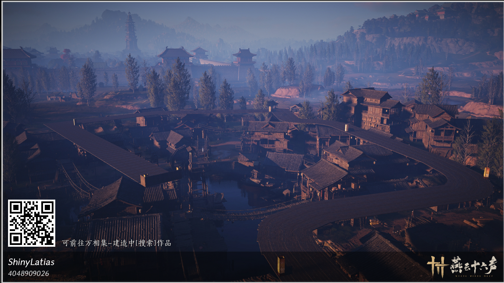 | ShinyLatias | 约864原木 |
SHAREff0c0c92c61e0ec4 | 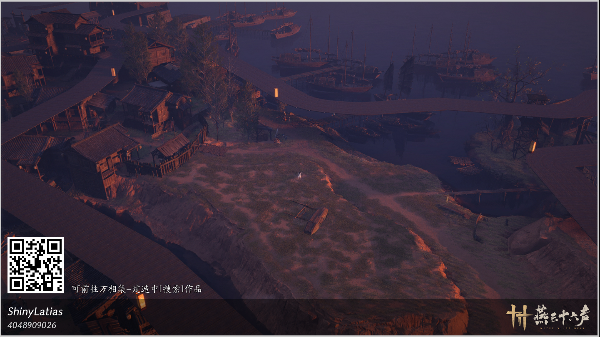 | ShinyLatias | 约196原木 |
建造流程
打开菜单，点击“外观”
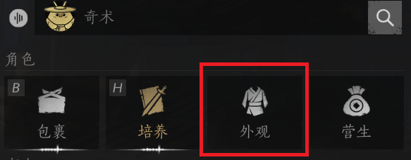
点击右边“万相集”

选择左边的“建造”，找不到可以上下滚动一下。

右上角搜索栏填入图纸分享码
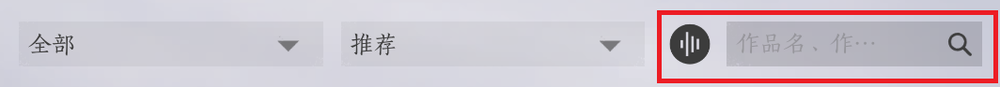
点击进入搜索出来的图纸（应该只有一个搜索结果，点进去），点击“获取图纸”
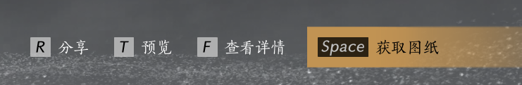
可以重复步骤1~5搜索到图纸之后，再点击“套用图纸”。（或者进入建造模式，在你的图纸背包里找到刚刚获取的图纸）
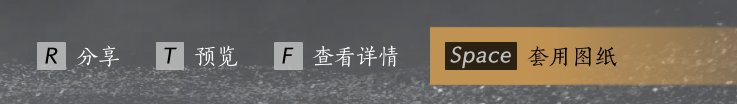
（获取图纸之后，按钮变成套用图纸）点击“原位摆放”
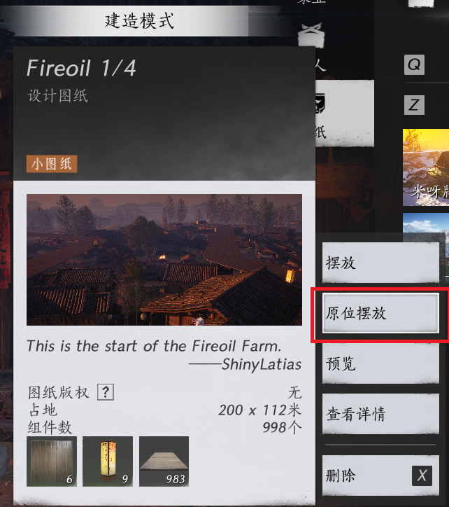
如果出现距离原摆放位置过远的提示，选择“前往”。此时会弹出地图，并且有黄圈显示图纸所在范围，可以自行传送并且走到图纸范围。
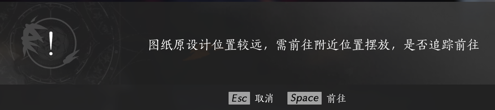
进入范围后重复以上步骤进行“原位摆放”。此时会逐渐摆好蓝色的虚影。结束后，靠近蓝色虚影，会出现对应图纸名字的交互选项，如右图。
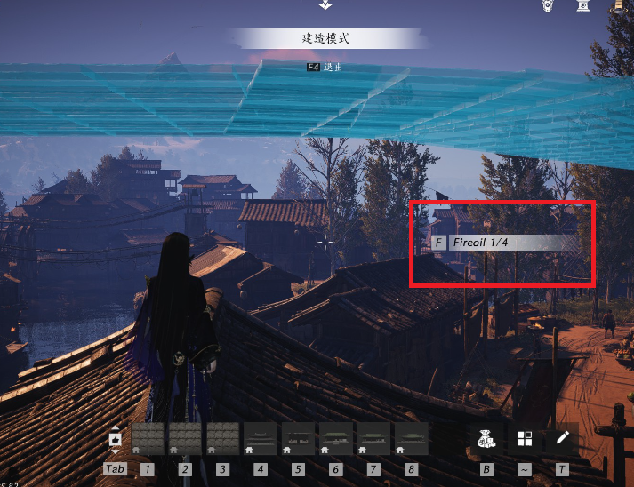
交互选择“自动落成”。等待图纸自动填充完成。
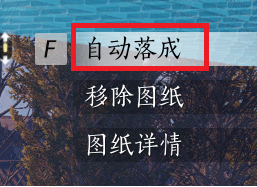
把所有的采火大道图纸按照同样的方式自动落成造好。测试通过没有问题，可进行后续步骤。
完成后，可再靠近造好的大道，同样出现交互选项，选择“移除图纸”
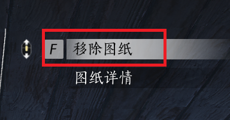
选择“仅移除图纸轮廓”。这样之后采火的时候不会意外触发图纸交互选项。
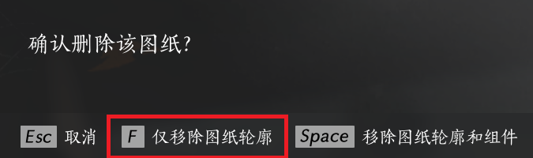